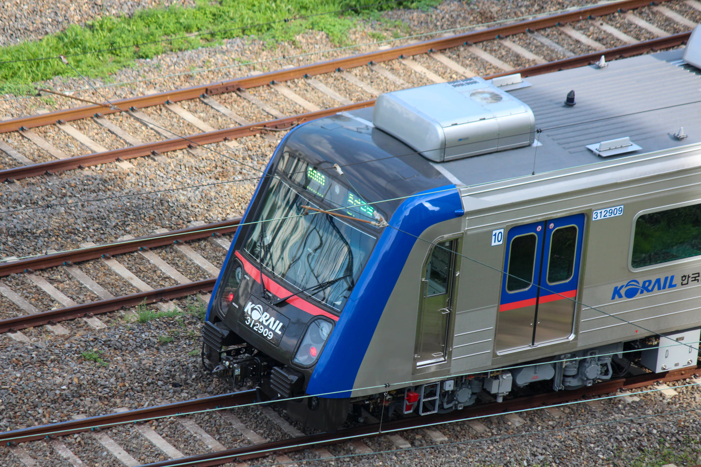

한국철도공사 311000&312000&319000호대 전동차
1차분
| 제어 방식 | VVVF |
| 구둥 방식 | 전기 동력분산식 |
| 편성 | 10량 1편성 |
| 도입 시기 | 1996년~1997년 |
| 제작사 | 현대정공 |
| 소유자 | 한국철도공사 |
| 소속 기지 | 이문차량사업소 |
| 차호 | 311001~311006편성 |

311005편성사진: 강유찬 
311006편성사진: 강유찬 |
|
311001~311006편성 재적. 1996년 11월~97년 2월 현대정공 제작. 증차가 시급한 1호선에서 신저항 후기 편성과 같이 도입되었다. 또한 이 차량은 도입 후 약 1년이라는 긴 시간동안의 시운전을 거쳐 1998년에 첫 운행을 시작했다. 추진제어장치는 도시바제 VVVF - GTO.
311002편성은 2016년 노량진역 탈선사고로, 311001편성은 2017년 과천안산선 전동차 대체로 인해 휴차되었다.
2차분
| 제어 방식 | VVVF |
| 구둥 방식 | 전기 동력분산식 |
| 편성 | 10량 1편성, 4량 1편성 |
| 도입 시기 | 1997~1998년 |
| 제작사 | 현대정공 |
| 소유자 | 한국철도공사 |
| 소속 기지 | 이문차량사업소, 구로차량사업소 |
| 차호 | 311007~311026, 319006~319007편성 |

311013편성사진: 강유찬 
311019편성사진: 강유찬 
311026편성사진: 강유찬 |
|
311007~311027, 31906~31907편성 재적. 현대정공 제작, 1997년 하반기~1998년 도입. 경인선 구로 - 부평 구간 복복선화 대비용으로 도입되었다. 1차분과의 다른 점은, 내부 출입문 무늬가 철도청 로고로 이루어졌다. 추진제어장치는 도시바제 VVVF - GTO이나, 31113, 31116, 31906, 31907편성은 도시바제 VVVF - IGBT로 개조되었다.
311009편성은 부평~주안 구간 전철 개통식 기념열차로 활용되었다. 311012편성은 외대앞역에서 어느 한 승객에 의해 출입문이 파손되는 사고가 있었다. 311024는 오류동역 투신 사고가 났었던 차량이다. 311026편성은 인천역에서 탈선 사고가 났었다. 311027편성은 각각 진위역, 창동역에서 투신 사고가 났었던 차량이다. 319006, 07편성은 2007년 영등포역 추돌사고로 인해 운행이 중단된 구) 5019편성의 잉여객차를 재조합하여 개조한 차량이다.
3차분
| 제어 방식 | VVVF |
| 구둥 방식 | 전기 동력분산식 |
| 편성 | 10량 1편성 |
| 도입 시기 | 1998년 |
| 제작사 | 대우중공업 |
| 소유자 | 한국철도공사 |
| 소속 기지 | 구로차량사업소 |
| 차호 | 311028~311041 |

311033편성사진: 강유찬 
311039편성사진: 강유찬 
311040편성사진: 강유찬 |
|
311028~311041편성 재적. 1998년 도입, 대우중공업 제작. 기존 히타치 생산 저항차량을 대체하기 위해 도입되었으며, 2차분과의 다른 점은, 내부 전광판의 개수가 2개로 늘어났다는 점이다. 추진제어장치는 도시바제 VVVF - GTO(311028~34, 36편성), 도시바제 VVVF - IGBT(311035, 37~41편성)
311034편성은 구로~부평 구간 전철 개통식 기념열차로 활용되었다. 1~3차분 차량은 2024년에 전량 퇴역 예정이다.
4차분
| 제어 방식 | VVVF |
| 구둥 방식 | 전기 동력분산식 |
| 편성 | 10량 1편성 |
| 도입 시기 | 2002년 |
| 제작사 | 로템 |
| 소유자 | 한국철도공사 |
| 소속 기지 | 병점차량사업소 |
| 차호 | 311042~311047 |

311042편성사진: 강유찬 
311045편성사진: 강유찬 |
|
311042 ~ 311047편성 재적. 1976년 도입 저항제어 차량을 대체할 목적으로 도입되었다. 2004년에 구 5043편성(311042)이 리콜된 이력이 있다. 그리고 기존 1~3차분의 전면부 형상을 동그랗게 변형한 것이 특징이다. 추진제어장치는 도시바제 VVVF - GTO(311046~311047), 도시바제 VVVF - IGBT(311042~311045)
311046편성은 수원~병점 구간 전철 개통식 기념열차로 활용되었다. 311047편성은 천안역에서 탈선 사고가 났었다.
5차분
| 제어 방식 | VVVF |
| 구둥 방식 | 전기 동력분산식 |
| 편성 | 10량 1편성 |
| 도입 시기 | 2003년 |
| 제작사 | 로템 |
| 소유자 | 한국철도공사 |
| 소속 기지 | 병점차량사업소, 구로차량사업소 |
| 차호 | 311048~311063 |

311056편성사진: 강유찬 
311062편성사진: 강유찬 |
|
311048~311063편성 재적. 경부선 수원-병점 연장, 1977~79년산 저항제어 차량을 대체할 목적으로 도입되었다. 구 5054(현 311053)편성부터는 철도공사 신도색으로 도입되었다. 그리고 이 차량은 대한민국 철도 차량중 최후로 필름형 행선안내기를 적용한 차량이다. 추진제어장치는 도시바제 VVVF - GTO(311049~311053, 311057~311058), 도시바제 VVVF - IGBT(311048, 311054~311056, 311059~311063)
311054편성은 시흥기지에서 침수 사고가 났었다.
6차분
| 제어 방식 | VVVF |
| 구둥 방식 | 전기 동력분산식 |
| 편성 | 10량 1편성 |
| 도입 시기 | 2004년 |
| 제작사 | 로템 |
| 소유자 | 한국철도공사 |
| 소속 기지 | 병점차량사업소 |
| 차호 | 311064~311065 |

311064편성사진: 강유찬 |
|
311064~311065편성 재적. 경부선 병점 - 천안 구간 연장분으로 도입되었다. 이 차량은 한국철도공사 차량 중 최초로 내장재가 불연재인 상태로 도입되었다. 추진제어장치는 도시바제 VVVF - IGBT
311065편성은 병점~천안 구간 전철 개통식 기념열차로 활용되었다.
7차분
| 제어 방식 | VVVF |
| 구둥 방식 | 전기 동력분산식 |
| 편성 | 10량 1편성 |
| 도입 시기 | 2005년 |
| 제작사 | 로템 |
| 소유자 | 한국철도공사 |
| 소속 기지 | 구로차량사업소, 병점차량사업소 |
| 차호 | 311066~311077 |

311069편성사진: 강유찬 
311071편성사진: 강유찬 |
|
311066~311077편성 재적. 1980~1986년산 1세대 저항제어차량의 중간 객차를 대체할 목적으로 도입되었으며, 한국철도공사에서 최초로 도입한 전동차이다. 그리고 이 차량부터는 창원공장에서 제작되었다. 또한 내부 전광판이 흰색이다. 추진제어장치는 도시바제 VVVF - IGBT
311066편성은 주안~동인천 구간 전철 개통식과 청량리~덕소 구간 전철 개통식 기념열차로 활용되었다. 311066, 311069, 311070편성은 GOGO 급행 열차로 운행한 적이 있다. 311069편성은 서해안테마열차로 운행한 적이 있다. 311074편성은 구로기지에서 충돌 사고가 났었다. 311075편성은 광명 셔틀 열차 개통 기념열차로 활용되었다. 311077편성은 천안~신창 구간 전철 개통식 기념열차로 활용되었다.
8차분
| 제어 방식 | VVVF |
| 구둥 방식 | 전기 동력분산식 |
| 편성 | 10량 1편성, 4량 1편성, 8량 1편성 |
| 도입 시기 | 2006년 |
| 제작사 | 로템 |
| 소유자 | 한국철도공사 |
| 소속 기지 | 병잠차량사업소, 이문차량사업소, 구로차량사업소, 용문차량사업소 |
| 차호 | 311078~311082, 319001~319005, 321001~321007 |

311079편성사진: 강유찬 |
|
311078~311082, 319001~319005, 321001~321007편성 재적. 경원선 의정부 - 소요산 구간 연장, 중앙선 청량리 - 국수 구간 복선전철화에 따른 차량 증비용으로 도입되었다.
당초에 5079~5092편성이 도입되었으나, 5079~5092편성은 광명셔틀, 경의중앙선의 운행을 위해 빠졌으며, 2010년 311000호대로 개정될때 5081~5085편성은 -3씩 앞당겨서 개번되었다. (5085편성은 현 311082)
추진제어장치는 도시바제 VVVF - IGBT
311080편성은 경북홍보테마열차와 민원전철365로 운행한 적 있다. 321004편성은 소요산~의정부 구간 전철 개통식 기념열차로 활용되었다.
9차분
| 제어 방식 | VVVF |
| 구둥 방식 | 전기 동력분산식 |
| 편성 | 10량 1편성 |
| 도입 시기 | 2012년, 2014년 |
| 제작사 | 현대로템 |
| 소유자 | 한국철도공사 |
| 소속 기지 | 구로차량사업소 |
| 차호 | 311083~311089 |

311087편성사진: 강유찬 
311089편성사진: 강유찬 |
|
311083 ~ 311089편성 재적. 311083~311084편성은 순수 증차분, 311085편성은 2004년에 퇴역한 1041편성을, 311086~311089편성은 2012년에 퇴역한 1042~1045편성의 대차분으로 도입되었다. 7,8차분과의 다른점은 실내에 LED 전광판이 아닌 LCD 안내기가 적용되었으며, 전면부에 충격흡수장치가 탑재되어있으며, 행선안내기 글씨체가 다르다. 추진제어장치는 도시바제 VVVF - IGBT
311085편성은 서민금융진흥원 랩핑열차로 운행된 적이 있었다.
361000호대(경춘선) 이적분
| 제어 방식 | VVVF |
| 구둥 방식 | 전기 동력분산식 |
| 편성 | 10량 1편성 |
| 도입 시기 | 2010년 |
| 제작사 | 현대로템 |
| 소유자 | 한국철도공사 |
| 소속 기지 | 구로차량사업소 |
| 차호 | 311090 |
311090편성사진: 강유찬 |
|
311090편성 재적 저항차량 1046~1047편성을 대체할 목적으로 도입되었으며, 2013년경 중앙선에서 운행하다가 2014년경 창원공장에서 신조객차 재편성 후 도입되었다. 참고로, 이 차량의 신조객차 2량은 10차분으로 분류한다. 추진제어장치는 도시바제 VVVF - IGBT
311091편성도 재적되었으나, 경춘선 차량 부족으로 다시 환원되었다.
10차분
| 제어 방식 | VVVF |
| 구둥 방식 | 전기 동력분산식 |
| 편성 | 10량 1편성 |
| 도입 시기 | 2013~2014년 |
| 제작사 | 현대로템 |
| 소유자 | 한국철도공사 |
| 소속 기지 | 구로차량사업소 |
| 차호 | 311090~311091편성 4,5호차, 311092~311094편성 |

311093편성사진: 강유찬 
311094편성사진: 강유찬 |
|
311092~311094편성의 전량과, 311090~311091편성의 신조객차가 10차분으로 분류된다. 저항차량 1048~1050편성의 대체용으로 도입되었으며, 이 차량의 특징은 전조등이 도입 당시부터 LED이다. 또한 이 차량부터는 출입문 구동방식이 저소음 전기식 모터이다. 추진제어장치는 도시바제 VVVF - IGBT
311091편성이 다시 경춘선으로 환원됨에 따라 신조객차 두 칸은 문산기지에서 휴차 중이다.
11차분
| 제어 방식 | VVVF |
| 구둥 방식 | 전기 동력분산식 |
| 편성 | 10량 1편성 |
| 도입 시기 | 2016년 |
| 제작사 | 현대로템 |
| 소유자 | 한국철도공사 |
| 소속 기지 | 구로차량사업소 |
| 차호 | 311095~312003편성 |

311098편성사진: 강유찬 
312002편성사진: 강유찬 |
|
311095~312003편성 재적. 저항차량 1060~1062, 1064, 1067~1069, 1072~1073편성의 대차분으로 도입되었다. 이 차량은 전면부 상단에 전조등이 추가되었으며, 집전장치가 싱글암인게 특징이다. 또한 객실 내부에 CCTV가 장착되어 있다. 추진제어장치는 도시바제 VVVF - IGBT
12차분
| 제어 방식 | VVVF |
| 구둥 방식 | 전기 동력분산식 |
| 편성 | 10량 1편성, 6량 1편성 |
| 도입 시기 | 2019년 |
| 제작사 | 현대로템 |
| 소유자 | 한국철도공사 |
| 소속 기지 | 구로차량사업소, 이문차량사업소 |
| 차호 | 312004~312007, 319008~319010편성 |

312004편성사진: 강유찬 |
|
312004~312007, 319008~319010편성 재적. 저항차량 1075~1078편성의 대차분으로 도입되었다. 319000호대 차량은 경원선 연천 - 광운대역 간 셔틀열차로 도입되었다. 이 차량부터는 개정된 철도안전법에 따라 CEM이 적용되어 전면부가 튀어나온 형태로 제작되었다. 추진제어장치는 도시바제 VVVF - IPM IGBT
13차분
| 제어 방식 | VVVF |
| 구둥 방식 | 전기 동력분산식 |
| 편성 | 10량 1편성 |
| 도입 시기 | 2021년~2022년 |
| 제작사 | 현대로템 |
| 소유자 | 한국철도공사 |
| 소속 기지 | 구로차량사업소 |
| 차호 | 312008~312015편성 |
|

312009편성사진: 송치민 |
|
312008~312015편성 재적. 잔여 저항제어 차량의 대체용도로 도입되었다. 이 차량부터는 신식 도색을 반영한 상태로 도입되었으며, 실내 인테리어도 기존 11차분에 비해 달라졌다. 추진제어장치는 도시바제 VVVF - IPM IGBT